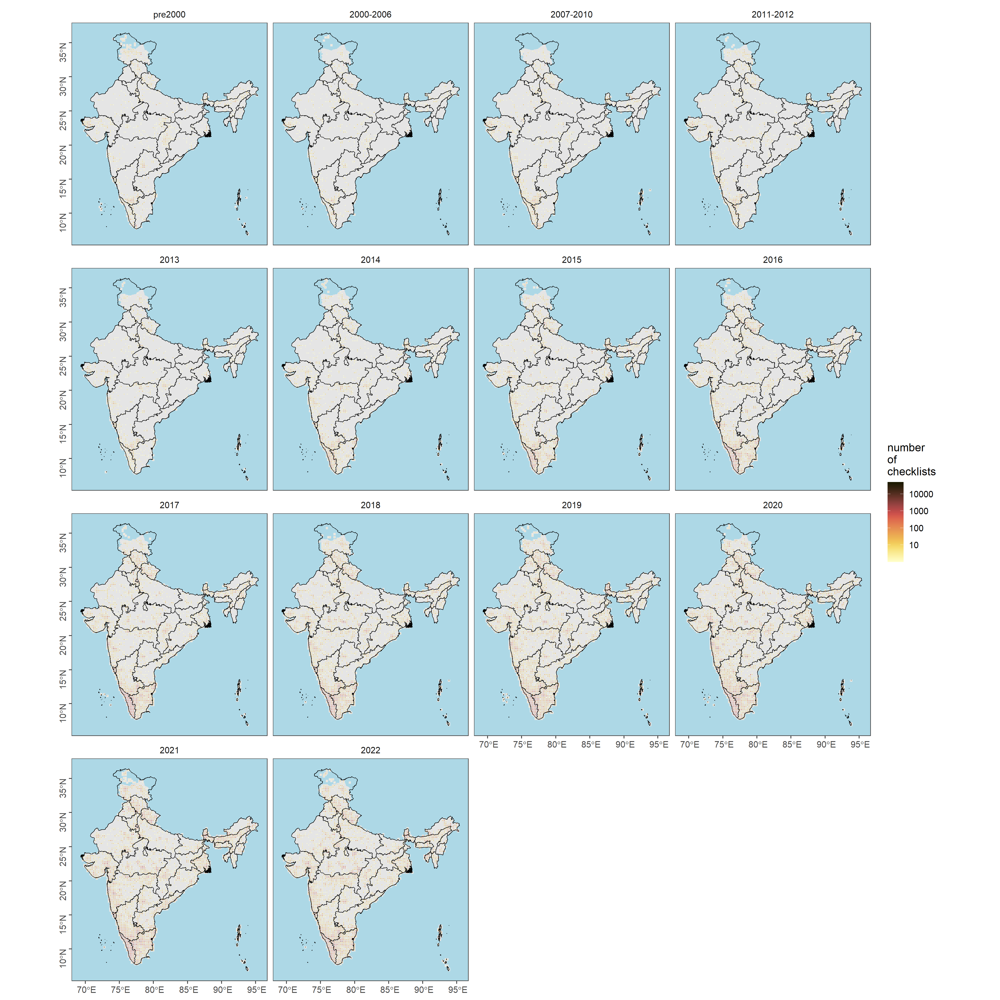
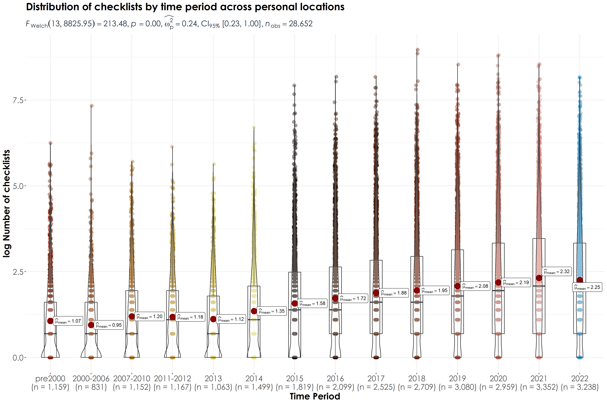
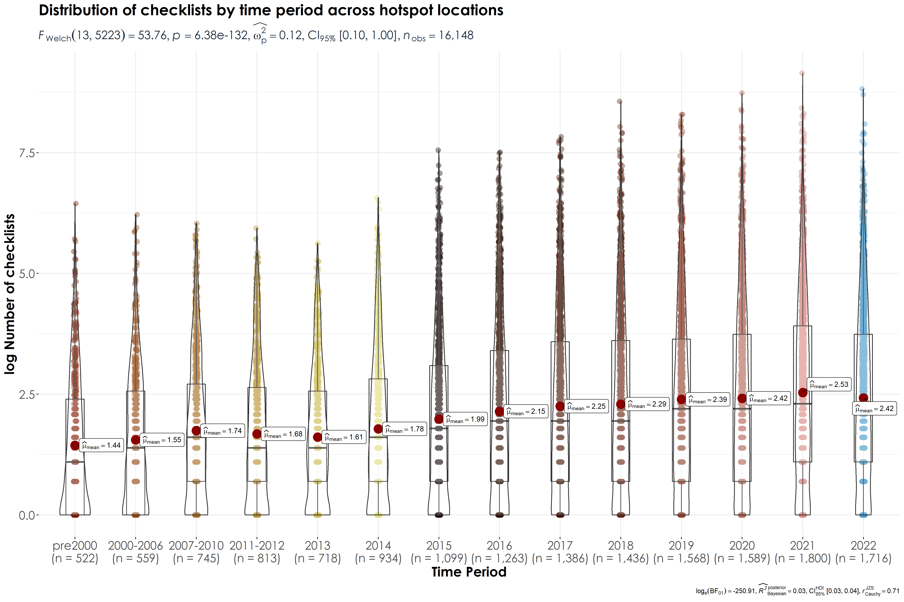
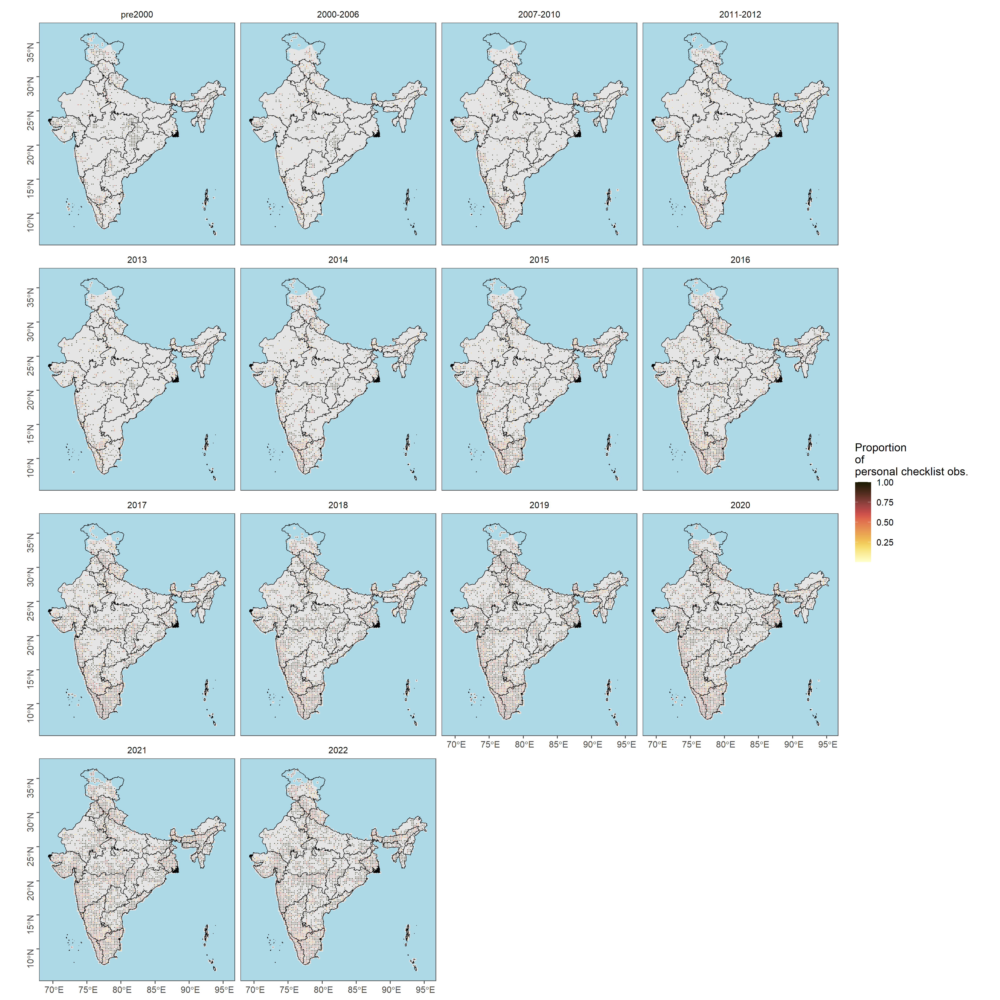

Section 4 Locality type
In this script, we will visualize checklist observations spatially and temporally to assess if there are differences in reporting of observations depending on locality type - i.e. hotspot or personal observations.
4.1 Prepare libraries
library(data.table)
library(readxl)
library(magrittr)
library(stringr)
library(dplyr)
library(tidyr)
library(readr)
library(ggplot2)
library(ggthemes)
library(scico)
library(extrafont)
library(sf)
library(rnaturalearth)
library(lme4)
library(multcomp)
library(sjPlot)
library(ggstatsplot)
library(paletteer)4.3 Subset data by hotspot or personal locations
# personal locations
ebd_persLoc <- ebd_in %>%
filter(locality_type == "P") # ~ 15 million observations
# hotspot locations
ebd_hotLoc <- ebd_in %>%
filter(locality_type == "H") # ~ 19 million observations
## count checklists in cell
ebd_summary_pers <- ebd_persLoc[, nchk := length(unique(sampling_event_identifier)),
by = .(X, Y, timePeriod)]
ebd_summary_hot <- ebd_hotLoc[, nchk := length(unique(sampling_event_identifier)),
by = .(X, Y, timePeriod)]
# count checklists reporting each species in cell and get proportion
ebd_summary_pers <- ebd_summary_pers[, .(nrep = length(unique(
sampling_event_identifier
))),
by = .(X, Y, nchk, scientific_name, timePeriod)
]
ebd_summary_pers[, p_rep := nrep / nchk]
ebd_summary_hot <- ebd_summary_hot[, .(nrep = length(unique(
sampling_event_identifier
))),
by = .(X, Y, nchk, scientific_name, timePeriod)
]
ebd_summary_hot[, p_rep := nrep / nchk]
# complete the dataframe for no reports
# keep no reports as NA --- allows filtering based on proportion reporting
ebd_summary_pers <- setDF(ebd_summary_pers) %>%
complete(
nesting(X, Y), scientific_name, timePeriod # ,
# fill = list(p_rep = 0)
) %>%
filter(!is.na(p_rep))
ebd_summary_hot <- setDF(ebd_summary_hot) %>%
complete(
nesting(X, Y), scientific_name, timePeriod # ,
# fill = list(p_rep = 0)
) %>%
filter(!is.na(p_rep))
# filter for species list above
ebd_summary_pers <- ebd_summary_pers[ebd_summary_pers$scientific_name %in% speciesOfInterest$scientific_name, ]
ebd_summary_hot <- ebd_summary_hot[ebd_summary_hot$scientific_name %in% speciesOfInterest$scientific_name, ]4.4 Checklist distribution over time across personal and hotspot locations
# total number of checklists
tot_n_chklist_pers <- ebd_summary_pers %>%
distinct(X, Y, nchk, timePeriod)
tot_n_chklist_hot <- ebd_summary_hot %>%
distinct(X, Y, nchk, timePeriod)
# species-specific number of grids by time Period
spp_grids_pers <- ebd_summary_pers %>%
group_by(scientific_name, timePeriod) %>%
distinct(X, Y) %>%
count(scientific_name,
name = "n_grids"
)
spp_grids_hot <- ebd_summary_hot %>%
group_by(scientific_name, timePeriod) %>%
distinct(X, Y) %>%
count(scientific_name,
name = "n_grids"
)
# Write the above two results
write.csv(spp_grids_pers, "results/03_ngrids-per-spp-by-timePeriod-personalLoc.csv", row.names=F)
write.csv(spp_grids_hot, "results/03_ngrids-per-spp-by-timePeriod-hotLoc.csv", row.names=F)4.5 Figure: Checklist distribution by time period
# reordering factors for plotting
tot_n_chklist_pers$timePeriod <- factor(tot_n_chklist_pers$timePeriod, levels = c("pre2000", "2000-2006", "2007-2010","2011-2012","2013","2014","2015",
"2016","2017","2018","2019","2020","2021","2022"))
tot_n_chklist_hot$timePeriod <- factor(tot_n_chklist_hot$timePeriod, levels = c("pre2000", "2000-2006", "2007-2010","2011-2012","2013","2014","2015",
"2016","2017","2018","2019","2020","2021","2022"))
# get a plot of number of checklists across grids for each timePeriod
plotNchk_pers <-
ggplot() +
geom_sf(data = land, fill = "grey90", col = NA) +
geom_tile(
data = tot_n_chklist_pers,
aes(X, Y, fill = nchk), lwd = 0.5, col = "grey90"
) +
geom_sf(data = india_states, fill = NA, col = "black", lwd = 0.3) +
scale_fill_scico(
palette = "lajolla",
direction = 1,
trans = "log10",
limits = c(1, 50000),
breaks = 10^c(1:5)
) +
facet_wrap(~timePeriod) +
coord_sf(xlim = bbox[c("xmin", "xmax")], ylim = bbox[c("ymin", "ymax")]) +
theme_few() +
theme(
legend.position = "right",
axis.title = element_blank(),
axis.text.y = element_text(angle = 90),
panel.background = element_rect(fill = "lightblue")
) +
labs(fill = "number\nof\nchecklists")
# export data
ggsave(plotNchk_pers,
filename = "figs/fig_number_checklists_25km_by_timePeriod_persLoc.png", height = 15, width = 15, device = png(), dpi = 300
)
dev.off()
plotNchk_hot <-
ggplot() +
geom_sf(data = land, fill = "grey90", col = NA) +
geom_tile(
data = tot_n_chklist_hot,
aes(X, Y, fill = nchk), lwd = 0.5, col = "grey90"
) +
geom_sf(data = india_states, fill = NA, col = "black", lwd = 0.3) +
scale_fill_scico(
palette = "lajolla",
direction = 1,
trans = "log10",
limits = c(1, 50000),
breaks = 10^c(1:5)
) +
facet_wrap(~timePeriod) +
coord_sf(xlim = bbox[c("xmin", "xmax")], ylim = bbox[c("ymin", "ymax")]) +
theme_few() +
theme(
legend.position = "right",
axis.title = element_blank(),
axis.text.y = element_text(angle = 90),
panel.background = element_rect(fill = "lightblue")
) +
labs(fill = "number\nof\nchecklists")
# export data
ggsave(plotNchk_hot,
filename = "figs/fig_number_checklists_25km_by_timePeriod_hotLoc.png", height = 15, width = 15, device = png(), dpi = 300
)
dev.off()

4.6 Testing for differences in number of checklists by time period and location type
# Test if there are significant differences in the number of checklists by time period
# add a grid code (to be used in a random effects model)
tot_n_chklist_pers <- tot_n_chklist_pers %>%
group_by(X,Y) %>%
mutate(gridCode = cur_group_id()) %>%
ungroup()
tot_n_chklist_hot <- tot_n_chklist_hot %>%
group_by(X,Y) %>%
mutate(gridCode = cur_group_id()) %>%
ungroup()
# Note: this takes a long-time to run
glmm_nChk_time_pers <- glmer(nchk ~ timePeriod + (1|gridCode), data = tot_n_chklist_pers, family = poisson(link="log"))
glmm_nChk_time_hot <- glmer(nchk ~ timePeriod + (1|gridCode), data = tot_n_chklist_hot, family = poisson(link="log"))
tukey_nChk_time_pers <- summary(glht(glmm_nChk_time_pers, linfct=mcp(timePeriod ="Tukey")))
cld(tukey_nChk_time_pers)
# pre2000 2000-2006 2007-2010 2011-2012 2013 2014 2015
# "d" "c" "d" "b" "a" "e" "f"
# 2016 2017 2018 2019 2020 2021 2022
# "g" "h" "i" "j" "m" "l" "k"
tukey_nChk_time_hot <- summary(glht(glmm_nChk_time_hot, linfct=mcp(timePeriod ="Tukey")))
cld(tukey_nChk_time_hot)
# pre2000 2000-2006 2007-2010 2011-2012 2013 2014 2015
# "b" "a" "d" "c" "a" "e" "f"
# 2016 2017 2018 2019 2020 2021 2022
# "g" "h" "i" "k" "l" "m" "j" 4.7 Figure: violinplot of number of checklists
# create log values of nChk
tot_n_chklist_pers$logNchk <- log(tot_n_chklist_pers$nchk)
tot_n_chklist_hot$logNchk <- log(tot_n_chklist_hot$nchk)
fig_nchk_time_pers <- ggbetweenstats(
data = tot_n_chklist_pers,
x = timePeriod,
y = logNchk,
xlab = "Time Period",
ylab = "log Number of checklists",
title = "Distribution of checklists by time period across personal locations",
plot.type = "boxviolin",
pairwise.comparisons = F)+ ## Note: this is done to avoid plot cluttering
scale_color_manual(values = c("#7E1900", "#944611", "#A66B20", "#B89130", "#CBB94A", "#E0DC7B","#180B09" ,"#2C0E00", "#461300", "#68240F", "#8E422E", "#B36556","#D88881", "#4799C9")) +
theme(plot.title = element_text(family = "Century Gothic",
size = 18, face = "bold"),
axis.title = element_text(family = "Century Gothic",
size = 16, face = "bold"),
axis.text = element_text(family="Century Gothic",size = 14),
plot.subtitle = element_text(
family = "Century Gothic",
size = 14,
face = "bold",
color="#1b2838"
))
fig_nchk_time_hot <- ggbetweenstats(
data = tot_n_chklist_hot,
x = timePeriod,
y = logNchk,
xlab = "Time Period",
ylab = "log Number of checklists",
title = "Distribution of checklists by time period across hotspot locations",
plot.type = "boxviolin",
pairwise.comparisons = F)+ ## Note: this is done to avoid plot cluttering
scale_color_manual(values = c("#7E1900", "#944611", "#A66B20", "#B89130", "#CBB94A", "#E0DC7B","#180B09" ,"#2C0E00", "#461300", "#68240F", "#8E422E", "#B36556","#D88881", "#4799C9")) +
theme(plot.title = element_text(family = "Century Gothic",
size = 18, face = "bold"),
axis.title = element_text(family = "Century Gothic",
size = 16, face = "bold"),
axis.text = element_text(family="Century Gothic",size = 14),
plot.subtitle = element_text(
family = "Century Gothic",
size = 14,
face = "bold",
color="#1b2838"
))
ggsave(fig_nchk_time_pers, filename = "figs/fig_logChecklists_timePeriod_persLoc.png", width = 15, height = 10, device = png(), units = "in", dpi = 300)
dev.off()
ggsave(fig_nchk_time_hot, filename = "figs/fig_logChecklists_timePeriod_hotLoc.png", width = 15, height = 10, device = png(), units = "in", dpi = 300)
dev.off()
## Note: pairwise comparisons where there is a significant difference in the log Number of checklists across the time periods compared (using a Games-Howell test)
## Please view the statistics below for more details
stats_persLoc_logNChk <- pairwise_comparisons(tot_n_chklist_pers, timePeriod, logNchk) %>%
filter(p.value <= 0.05) %>%
data.frame()
write.csv(stats_persLoc_logNChk[,-9], "results/03_pairwiseComparisons_persLoc_logNchk.csv", row.names = F)
stats_hotLoc_logNChk <- pairwise_comparisons(tot_n_chklist_hot, timePeriod, logNchk) %>%
filter(p.value <= 0.05) %>%
data.frame()
write.csv(stats_hotLoc_logNChk[,-9], "results/03_pairwiseComparisons_hotLoc_logNchk.csv", row.names = F)  ## What is the number of checklists from each grid that are reported from hotspots compared to personal observations?
pers_hot <- left_join(tot_n_chklist_pers[,-c(5,6)], tot_n_chklist_hot[,-c(5,6)],by = c("X","Y", "timePeriod")) %>%
replace(is.na(.), 0)
names(pers_hot)[4] <- "P"
names(pers_hot)[5] <- "H"
pers_hot <- pers_hot %>%
mutate(prop_pers = ((P)/(P+H))) %>%
mutate(prop_hot = ((H)/(P+H)))4.8 Visualization of hotspot and personal observations from the same grid across time
# reordering factors for plotting
pers_hot$timePeriod <- factor(pers_hot$timePeriod, levels = c("pre2000", "2000-2006", "2007-2010","2011-2012","2013","2014","2015",
"2016","2017","2018","2019","2020","2021","2022"))
# get a plot of proportion of checklists across grids for each timePeriod for personal observations
plot_prop_pers <-
ggplot() +
geom_sf(data = land, fill = "grey90", col = NA) +
geom_tile(
data = pers_hot,
aes(X, Y, fill = prop_pers), lwd = 0.5, col = "grey90") +
geom_sf(data = india_states, fill = NA, col = "black", lwd = 0.3) +
scale_fill_scico(
palette = "lajolla",
direction = 1
) +
facet_wrap(~timePeriod) +
coord_sf(xlim = bbox[c("xmin", "xmax")], ylim = bbox[c("ymin", "ymax")]) +
theme_few() +
theme(
legend.position = "right",
axis.title = element_blank(),
axis.text.y = element_text(angle = 90),
panel.background = element_rect(fill = "lightblue")
) +
labs(fill = "Proportion\nof\npersonal checklist obs.")
# export data
ggsave(plot_prop_pers,
filename = "figs/fig_prop_checklists_persLoc.png", height = 15, width = 15, device = png(), dpi = 300
)
dev.off()
# get a plot of proportion of checklists across grids for each timePeriod for hotspot observations
plot_prop_hot <-
ggplot() +
geom_sf(data = land, fill = "grey90", col = NA) +
geom_tile(
data = pers_hot,
aes(X, Y, fill = prop_hot), lwd = 0.5, col = "grey90") +
geom_sf(data = india_states, fill = NA, col = "black", lwd = 0.3) +
scale_fill_scico(
palette = "lajolla",
direction = 1
) +
facet_wrap(~timePeriod) +
coord_sf(xlim = bbox[c("xmin", "xmax")], ylim = bbox[c("ymin", "ymax")]) +
theme_few() +
theme(
legend.position = "right",
axis.title = element_blank(),
axis.text.y = element_text(angle = 90),
panel.background = element_rect(fill = "lightblue")
) +
labs(fill = "Proportion\nof\nhotspot checklist obs.")
# export data
ggsave(plot_prop_hot,
filename = "figs/fig_prop_checklists_hotLoc.png", height = 15, width = 15, device = png(), dpi = 300
)
dev.off()